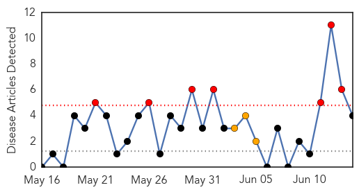
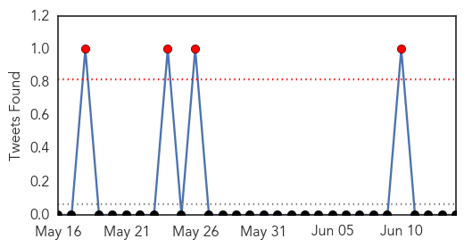

West Nile Virus
30-Day Web Trend
7 alerts, 3 warnings

30-Day Twitter Trend
2 alerts, 0 warnings

Article Locations

Article Confidences

Top Articles:
Top Tweets:
-
No tweets found for Jun 14, 2015
Influenza
30-Day Web Trend
0 alerts, 0 warnings

30-Day Twitter Trend
2 alerts, 0 warnings

Article Locations

Article Confidences

Top Articles:
- 0.983
- Woman quarantined after return from South Korea tests negative for MERS
- 0.980
- Woman returning from South Korea tests negative for MERS
- 0.973
- Woman with fever after S Korean trip negative for MERS
- 0.902
- Phuket on alert for the MERS virus
- 0.796
- UK Drug Safety Agency Falsified Vaccine Safety Data For 6 Million
- 0.751
- June 13, 2015 Archives
- 0.751
- June 13, 2015 Archives
- 0.573
- Bird flu cleanup continues throughout Midwest
Top Tweets:
-
No tweets found for Jun 14, 2015